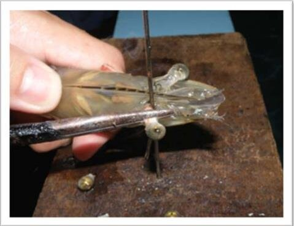
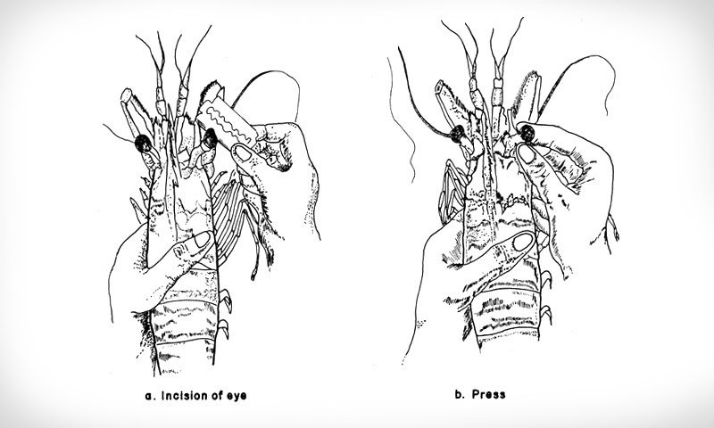

Volume IV · O debate sobre a exploração animal · capítulo 1
Como vivem e morrem os animais explorados pelos humanos?
Antes de ler camada de estudo, não faz parte do texto original
Os animais explorados, sobretudo na alimentação, vivem em confinamento, sofrem doenças, mutilações e transporte, e são mortos em abatedouros ou na pesca de modos que jamais aceitaríamos para humanos; não há justificativa para esse padrão duplo.
A maioria dos animais usados para comida vive presa em lugares apertados, longe das mães, às vezes machucados, e é morta muito jovem. Se isso acontecesse com pessoas, todo mundo acharia horrível. O sofrimento deles é igual.
Se uma fábrica tratasse cães assim, haveria protestos na porta no dia seguinte. A diferença está só na espécie de quem está lá dentro.
- P1 A exploração animal causa sofrimento intenso e morte a um número gigantesco de animais.
- P2 Tratar humanos assim seria considerado inaceitável porque sofrer e morrer desse modo prejudica gravemente as vítimas.
- P3 Os animais explorados também são gravemente prejudicados por isso.
- C Logo, aceitar com eles o que seria inaceitável com humanos é um padrão duplo injustificado.
Forma lógica do argumento central do capítulo. Se as premissas forem verdadeiras, a conclusão se segue. Para discordar, é preciso mostrar qual premissa é falsa.
Eles dizem “Hoje os animais são criados e abatidos com bem-estar.”
Resposta O capítulo descreve o que é prática comum e legal: confinamento, mutilações sem anestesia, doenças, transporte longo e abate em escala. E a pesca, que mata a maioria dos animais, quase não tem regra alguma.
Mais objeções e respostas em Desbancando objeções.
Texto original Luciano Carlos Cunha · Volume IV, p. 9 da edição em PDF
1.1. A exploração animal
Os animais não humanos são explorados e mortos pelos humanos todos os dias para as mais diversas finalidades. São usados como alimento, vestuário, modelo de testes, para entretenimento, lazer e como trabalhadores ou ferramentas. A forma de exploração que mais mata animais é, disparadamente, o seu uso na alimentação. Em se tratando de vertebrados estima-se que pelo menos 2 trilhões sejam mortos globalmente por ano para consumo. Isso já significa que em média, em um único dia, são mortos algo em torno de 5,5 bilhões de vertebrados. Para visualizar o quão grande é esse número, basta lembramos que há em torno de 8 bilhões de humanos no mundo. Entretanto, a esmagadora maioria dos animais que os humanos exploram são invertebrados1. A tabela a seguir apresenta algumas estatísticas sobre os tipos de animais mortos em cada forma de exploração para consumo.
| Tipo de exploração para consumo | Animais mortos globalmente por ano |
|---|---|
| Mamíferos e aves | Em torno de 80 bilhões2. |
| Peixes criados em fábricas | 3Entre 51 e 167 bilhões. |
| Peixes capturados diretamente no mar | 4Entre 787 bilhões e 2,3 trilhões. |
| Animais aquáticos utilizados como ração para os peixes criados para consumo | Entre 462 bilhões e 1,1 trilhão5. |
| Crustáceos decápodes criados em fábricas | 6Entre 255 e 604 bilhões. |
| Bichos-da-seda para produção de seda | Entre 420 bilhões e 1 trilhão7. |
| Insetos mortos para consumo | Entre 2 e 3,2 trilhões8. |
| Cochonilhas na produção do corante carmim | 9Entre 4,6 e 21 trilhões. |
| Camarões pescados diretamente no mar | 10Em torno de 25 trilhões. |
A soma desses números sugere que algo entre 34 e 54 trilhões de animais são mortos anualmente em todo o mundo. Isso significa que, somente para consumo, entre 93 e 147 bilhões de animais não humanos são mortos por dia. Ou seja, somente para consumo, o número de animais mortos por dia está entre 11 e 18 vezes a população humana.
1.2. A situação geral dos animais criados para consumo
A seguir ilustraremos como exemplo da vida típica dos animais explorados a situação dos animais criados para consumo. Entretanto, é importante ter em conta que a situação dos animais explorados para outras finalidades é bastante similar11.
Os animais que são criados para consumo, além de perderem a vida, normalmente padecem de intenso sofrimento, desde o momento do nascimento até o momento em que são mortos12. Devido à demanda por produtos de origem animal, as fazendas industriais estão organizadas para criar o maior número possível de animais no menor espaço e com o menor custo possíveis. A maioria dos animais não têm espaço algum para se mover. Muitos nem conseguem se virar. Vivem em pisos de concreto ou em grades, continuamente sobre os seus excrementos, o que lhes ocasiona várias doenças e ferimentos. Veremos mais detalhes sobre isso tudo a seguir.
1.3. A situação das galinhas. frangos e pintinhos
As galinhas poedeiras vivem amontoadas em gaiolas superlotadas, em um espaço do tamanho de uma folha de papel13. Permanecem de pé a vida inteira sobre os arames das gaiolas. Em alguns casos seus pés ficam presos na malha metálica e, quando são retiradas para serem encaminhadas ao matadouro, muitas vezes suas pernas se quebram e uma parte delas é arrancada.
Por sua vez, os frangos criados para a produção de carne foram geneticamente selecionados para crescer muito rapidamente14. Suas pernas não suportam seu peso, o que lhes causa lesões e dor. Vários deles nem conseguem ficar de pé.
Já os filhotes machos de galinhas poedeiras não são criados para serem consumidos, pois não cresceriam tão rápido quanto aqueles selecionados para esse fim. São jogados em uma máquina onde são triturados vivos, ou em uma lata de lixo onde morrem asfixiados ou esmagados pelos outros filhotes jogados sobre eles.
1.4. Doenças que afetam os animais explorados para consumo
Dadas as condições de superlotação, nas fazendas as doenças podem se espalhar rapidamente, dando origem a epidemias. Isso acontece tanto na criação de animais terrestres quanto aquáticos. Quando isso acontece, é comum a matança em massa de animais, incluindo dos saudáveis, mesmo quando é possível tratá-los (pois é mais barato matá-los e fazer nascer outros para substituí-los). Em relação aos animais terrestres, isso geralmente é feito enterrando os animais vivos e cobrindo-os com cal virgem, ou então fervendo-os vivos15.
As doenças também podem ser encontradas em concentrações muito elevadas em animais aquáticos criados para consumo (embora também ocorram em alto grau entre os que vivem na natureza). Assim como acontece com animais terrestres, o fato de as fazendas de criação de animais aquáticos serem superlotadas facilita muito a transmissão de doenças. A superlotação, a má qualidade da água e do ambiente, e o quão estressados ou fracos estão os animais, estão entre os diversos fatores prejudicam as condições dos seus sistemas imunológicos, tornando-os mais susceptíveis às doenças16. Além disso, as substâncias químicas presentes nos tanques podem irritar suas peles e membranas mucosas, tornando-os muito suscetíveis a germes, de modo semelhante a quando sofrem devido a ferimentos17. Os crustáceos também são afetados massivamente por doenças que causam, dentre outras coisas, cegueira e deformações severas, sendo que algumas delas podem matar populações inteiras em questão de dias18.
1.5. A situação das porcas
Muitas das porcas exploradas para fins de reprodução ficam quatro meses confinadas em minúsculas caixas de metal com piso de ripas. Elas não podem nem mesmo se virar, e só podem se deitar ou se levantar com grande dificuldade19. Seus músculos e articulações são gravemente lesionados e elas literalmente enlouquecem por nunca poderem se mover e devido ao tédio decorrente de nunca poderem exercer nenhuma atividade. Os leitões são desmamados a partir de três semanas de idade. Nesse momento elas são novamente engravidadas e o ciclo recomeça até que tenham três anos, quando são então mortas.
1.6. A situação das vacas e bezerros
As vacas, como todas as fêmeas de mamíferos, só produzem leite após darem à luz. Por isso são engravidadas continuamente, geralmente por inseminação artificial. Os produtores não querem que os bezerros bebam o leite, pois isso diminuiria os lucros. Então, mães e bebês são separados logo após o nascimento, o que é terrivelmente traumático para ambos, que choram e gritam por vários dias. As vacas são ordenhadas normalmente por 10 meses após serem separadas de seus bebês. Depois são engravidadas novamente e o ciclo é repetido até que estejam completamente exaustas, quando então são mortas.
Os bezerros usados para produzir “carne de vitela” frequentemente vivem em gaiolas minúsculas nas quais sequer podem se virar. É comum que suas cabeças sejam imobilizadas para que não possam exercitar seus músculos, para tornar sua carne tão macia quanto possível. Por isso são alimentados com fórmulas de baixo teor nutricional, tornando-os tão fracos que muitos nem mesmo conseguem andar quando são enviados para serem mortos20.
1.7. Procedimentos que envolvem mutilação
Muitos mamíferos são marcados com ferros quentes e têm arrancados pedaços de seus corpos, como partes das orelhas e das caudas. Os bois e touros têm seus chifres serrados ou queimados com produtos cáusticos. As galinhas têm seus bicos cortados com lâminas quentes.
Os porquinhos filhotes têm seus dentes arrancados e as caudas cortadas. Tudo isso é feito sem analgésicos ou anestesia, pois elevaria os custos sem aumento na produtividade.
1.8. Vulnerabilidade às decisões dos funcionários
Os animais estão completamente vulneráveis ao que os funcionários decidirem fazer. Por exemplo, se um funcionário está estressado, está com raiva de algum animal ou simplesmente é sádico e quer se divertir de maneira cruel, não há nada que realmente o impeça de torturar os animais da maneira como bem entender e o quanto quiser. Os animais estão completamente vulneráveis em suas mãos.
O livro de Gail , Slaughterhouse: The Shocking Story of Greed, Neglect, and Inhumane Treatment Inside the U.S. Meat Industry (em tradução livre, Abatedouro: a história chocante de ganância, negligência e tratamento desumano na indústria de carne dos EUA) traz uma série de depoimentos de funcionários de abatedouros relatando o que fazem com os animais. O depoimento a seguir é um exemplo:
"Você já vai matar o porco, mas isso não é o suficiente. Ele tem que sofrer... você não apenas o mata, você faz da maneira mais dolorosa, bate com força, golpeia a traqueia, faz com que ele se afogue em seu próprio sangue. Corta fora seu nariz. Há um porco vivo correndo pela área de abate do matadouro. Ele está apenas olhando para mim. Eu o perfuro. E então pego minha faca e – iiiirck! [imitando o urro do porco] enquanto ele está sentado ali sem fazer mais nada, arranco fora o olho dele! E a única coisa que o porco faz é urrar de dor. Uma vez peguei a faca – é bem afiada – e arranquei a ponta do nariz de um porco, como se fosse um pedaço de mortadela. Ele ficou louco por alguns segundos e, depois, ele apenas ficou lá parado, olhando com uma cara de idiota. Então peguei um punhado de salmoura e coloquei em seu nariz. Agora o porco realmente enlouqueceu, esfregando o nariz por todo o corpo. Eu ainda tinha muita salmoura na mão – estava usando uma luva de borracha – e enfiei tudo no ânus do porco. O pobre porco não sabia se cagava ou se ficava cego. Mas eu não era o único fazendo esse tipo de coisa. Um sujeito com quem trabalho persegue os porcos para que caiam no tanque de água fervendo21” .
1.9. O transporte até o abatedouro
No transporte até o abatedouro, os animais são colocados nos caminhões usando espetos, martelos e bastões que dão choques elétricos. As aves são içadas como se fossem coisas. Geralmente são seguradas pelas pernas e atiradas nas gaiolas, o que muitas vezes quebra suas
pernas e outros ossos22. As condições de superlotação nos caminhões são ainda piores do que nas fazendas. Além disso, os animais são expostos ao calor ou frio extremos e não recebem comida ou água durante todo o transporte, pois fazê-lo não seria lucrativo. Vários animais morrem antes de chegarem ao seu destino, o que mostra o quanto sofreram na viagem23.
1.10. Como os animais são mortos nos abatedouros
Os animais são mortos de maneiras que causam sofrimento excruciante. Chegando no abatedouro, recebem golpes com estacas para que se movam pelos corredores. Por vezes recebem choques elétricos com bastões e também chutes e socos. Quando não conseguem andar, são arrastados com ganchos cravados em diferentes partes dos seus corpos, que por vezes rasgam essas partes. Além disso, podem ver e ouvir outros animais sendo mortos e sentir o cheiro do sangue desses animais. Depois de serem atordoados são acorrentados pelas pernas e içados do chão de cabeça para baixo, o que por vezes quebra suas pernas.
Como as filas de animais nos matadouros precisam se mover rapidamente, esse processo é feito em alta velocidade, e então é comum que os animais não fiquem realmente atordoados e estejam plenamente conscientes ao serem esfaqueados. Além disso, muitas vezes o esfaqueamento não os mata, e então são esquartejados, fatiados, têm a pele arrancada ou são fervidos enquanto ainda estão totalmente conscientes24. Esse destino aguarda todos os animais usados na alimentação, independentemente de terem sido criados em fazendas industriais ou nas chamadas fazendas "de criação livre".
1.11. Como os animais são mortos na pesca
A pesca é uma das formas de exploração que mais mata animais25. Além de perderem a vida, os animais sofrem intensamente, seja nas fazendas de criação de animais aquáticos, seja na pesca em mar aberto. Na pesca com anzóis, o anzol perfura a boca ou outras partes do corpo e, ao arrastar o peixe para fora da água, concentra na região perfurada todo o peso do corpo do animal. Desse modo, o anzol perfura de modo cada vez mais profundo e rasga cada vez mais a
parte do corpo onde foi cravado26. Os animais que são pescados com redes também sofrem intensamente por vários fatores, que são detalhados a seguir.
As formas mais comuns pelas quais os animais pescados morrem são27: porque seus órgãos internos explodem devido à descompressão; asfixia; tendo seus corpos cortados enquanto ainda estão conscientes; esmagamento devido ao peso dos outros animais empilhados ou presos nas redes; golpes na cabeça; eletrocussão; hipotermia; envenenamento por dióxido de carbono ou um tiro na cabeça. Outros são cozidos vivos ou até mesmo comidos vivos28.
1.12. Exploração sobre insetos
A exploração sobre insetos prejudica uma quantidade gigantesca de animais. O espaço destinado aos insetos nas fazendas é ainda menor do que aquele dado aos outros animais em proporção ao seu tamanho29. Antes de retirá-los do confinamento, a prática comum é deixá-los sem comida por 12 a 24 horas e reduzir a concentração de oxigênio. Em seguida são mantidos vivos e resfriados a temperaturas próximas a 0ºC. Métodos típicos de matá-los são: congelamento; imersão em água com temperatura superior a 80ºC; por micro-ondas; em fornos de túnel infravermelho e por trituração30.
1.13. Exploração sobre crustáceos decápodes
Exemplos de crustáceos decápodes são caranguejos, siris, lagostas, lagostins e camarões. Esses animais estão entre os que mais são explorados pelos humanos. Por exemplo, em torno de 25 trilhões de camarões são mortos anualmente para consumo31. Em 2021 um relatório oficial do governo do Reino Unido elaborado por uma equipe de cientistas especialistas revisou mais de 300 estudos e concluiu claramente que crustáceos decápodes são 32. A seguir veremos os procedimentos aos quais esses animais são tipicamente sujeitados quando são explorados.
Captura e estocagem
Os crustáceos decápodes destinados à indústria alimentar são capturados na natureza ou “colhidos” nas fazendas de criação. Os métodos de captura variam dependendo da espécie e da quantidade de animais capturados, mas todos prejudicam os animais gravemente devido a alterações na pressão barométrica, trauma físico, ferimentos, esmagamento, exaustão e morte33.
Uma vez no convés, os decápodes capturados na natureza são expostos ao ar, luz, flutuações de temperatura, ruídos, ao manuseio e também a altas densidades de estocagem, pois estão confinados muito próximos uns dos outros. Isso resulta na restrição de seus comportamentos, em feridas, infecções, agressões e até mesmo em mutilações e morte por asfixia34. A estocagem dura normalmente vários dias após a captura35.
Apesar de suas cascas duras, são animais frágeis. Por exemplo, seus membros podem ser feridos ou arrancados quando são removidos das redes ou retirados dos potes36. Além disso, a velocidade com que são transportados do mar para o barco pode causar uma rápida mudança na pressão e na temperatura, causando-lhes intenso sofrimento37.
Ao saírem do mar ficam expostos ao ar e, como são animais que respiram debaixo da água por meio de guelras, isso torna difícil absorverem oxigênio. A exposição ao ar pode causar estresse, vulnerabilidade a doenças e até mesmo ser fatal devido à asfixia. Durante o armazenamento a bordo esses animais são mantidos fora da água por longos períodos de tempo38.
Mutilações
Mutilações é um termo utilizado para descrever procedimentos que destroem, removem ou danificam os membros ou outras partes do corpo39. As mutilações descritas a seguir são
práticas comuns da indústria de exploração sobre caranguejos, lagostas e camarões e são realizados quase sempre sem qualquer anestesia ou analgésico40.
Mutilação nos olhos (ablação do pedúnculo ocular)
A ablação do pedúnculo ocular (eyestalk ablation) consiste na remoção ou destruição de um ou ambos os pedúnculos oculares, que são as hastes que sustentam os olhos dos camarões. É realizado em camarões fêmeas reprodutoras visando aumentar a produção total de ovos e a porcentagem de fêmeas em uma determinada população que participará na reprodução (pois o pedúnculo ocular contém glândulas que regulam os ovários)41. É praticado rotineiramente em quase todas as instalações de maturação ou reprodução de camarões marinhos do mundo, tanto de pesquisa quanto comerciais42.
O procedimento envolve arrancar ou esmagar o pedúnculo ocular, cortá-lo com uma lâmina e espremer o conteúdo, e em seguida cauterizar ou ligar o pedúnculo.
As técnicas usadas variam43. Por exemplo, uma técnica consiste em comprimir o pedúnculo ocular, geralmente metade a dois terços para baixo do olho, como mostrado na imagem a seguir.

Créditos da imagem: Kannan et al. (2015).
Outra técnica envolve fazer um corte no olho com uma lâmina ou tesoura e em seguida esmagar o pedúnculo ocular com o polegar e a unha do indicador até que o conteúdo dos olhos tenha sido removido, como mostrado na imagem a seguir.

Créditos da imagem: Kungvankij et al. (1989 [1986]).
A cauterização é feita com um dispositivo de eletrocautério, com um fio incandescente ou com uma pinça44. Já a ligadura é feita amarrando-se firmemente o pedúnculo ocular com um fio cirúrgico45.
Todos esses procedimentos são feitos normalmente sem anestesia46. Estudos demonstraram que camarões apresentam comportamentos associados à dor durante e após a ablação do pedúnculo ocular, como sacudir a cauda, esfregar a área afetada e encolher-se47. Há também estudos que mostram que tais comportamentos são reduzidos após a aplicação de um creme anestésico na área afetada, o que confirma mais ainda que o procedimento é doloroso48.
Além dar dor intensa e do óbvio dano aos olhos e consequente perda de visão, estudos mostram que a prática prejudica seus sistemas fisiológico, metabólico, hormonal e imunológico49, além de prejudicar sua percepção sensorial50, sua capacidade de nadar e também de se movimentar51. Tudo isso resulta em aumentos das suas taxas de mortalidade52.
Rowe (2018) cita a ablação do pedúnculo ocular como exemplo de uma prática que seria considerada como violando até mesmo os padrões mais básicos de bem-estar animal se fosse feita em vertebrados, mas que, apesar disso, é rotineiramente praticada em invertebrados53.
Remoção de garras (declamação)
A declamação (declawing) é a amputação manual de uma ou ambas as garras de um crustáceo decápode. É mais comumente realizada em caranguejos, tanto nos que são criados em fazendas quanto nos que são pescados diretamente no mar. O procedimento resulta em o animal ter uma alimentação prejudicada e diminui suas taxas de sobrevivência54.
Uma vez que os caranguejos podem amputar naturalmente as suas próprias garras em resposta ao estresse ou ao perigo (o que é chamado de autotomia) uma crença comum é a de que a declamação não é dolorosa. Entretanto, isso é equivocado, pois pesquisas mostram que há uma maior resposta ao estresse e maior mortalidade em caranguejos que foram declamados por humanos, em comparação aos que praticaram a autotomia55.
Caranguejos declamados exibem comportamentos que indicam uma consciência dos ferimentos resultantes (como tremer. e tocar ou proteger os ferimentos com as pernas restantes)56. Esses comportamentos não são observados na autotomia, o que indica que estão sentindo dor como resultado da remoção das garras57.
Devolução de caranguejos declamados ao mar
O ato de remover as garras de um caranguejo e depois devolvê-lo ao mar é considerado uma fonte de alimento sustentável, pois uma garra pode ser arrancada para venda e o caranguejo é colocado de volta na água, onde presume-se que outra garra voltará a crescer58.
No entanto, além das feridas dolorosas causadas pela declamação59, a prática também prejudica gravemente a qualidade de vida do caranguejo depois que retorna ao mar, pois reduz sua capacidade de se alimentar e de acessar fontes alimentares (o que também prejudica o crescimento da garra60), além de reduzir sua capacidade de se defender contra predadores61 e de competir por recursos importantes (como território, abrigo ou parceiros de acasalamento62). Por conseguinte a prática também diminui suas taxas de sobrevivência63.
Corte das garra
As condições estressantes e apertadas em que esses animais são mantidos aumentam a probabilidade de conflitos e de canibalismo64. Remover o funcionamento de suas garras minimiza o risco de danos a outros animais e aos funcionários que os manuseiam. O processo de corte das garras (claw nickling) envolve a fratura dos apódemas65 e o corte dos tendões nos dáctilos66 das garras com o objetivo impedir o seu funcionamento. É realizado em animais como caranguejos e lagostas e é feito no momento da preparação para o transporte.
O processo é extremamente prejudicial aos animais. Como partes da garra são fraturadas e cortadas, resultam em uma ferida aberta – além da dor, as feridas e os danos aos tecidos internos resultam em perda de sangue e em um risco aumentado de infecção67. Caranguejos que tiveram as suas garras cortadas apresentaram taxas de mortalidade de 83%68, enquanto caranguejos não cortados apresentaram uma taxa de mortalidade de 16,7%69. Além disso,
como as garras são essenciais para o movimento desses animais70. o procedimento também reduz sua capacidade de se alimentar, de se cuidar, de se defender e até mesmo de se mover71.
Amarração de garras
Outro procedimento típico durante o armazenamento é a amarração de garras (claw banding). O procedimento restringe significativamente o comportamento e os movimentos básicos desses animais e, se aplicado por longo prazo está associada à atrofia muscular, inibição da alimentação e estresse72, além de também reduzir a capacidade do animal de se alimentar, de se cuidar, de se mover e de se defender73.
Entalhe em V
O entalhe da cauda (também chamado de entalhe em V, ou V-notching) visa identificar lagostas grávidas para que possam ser devolvidas ao mar e continuarem a se reproduzir74. O entalhe tem como objetivo proporcionar uma identificação rápida e fácil caso sejam capturadas inadvertidamente novamente75.
O entalhe é criado removendo uma pequena peça triangular do leque traseiro76. Além do procedimento em si ser doloroso, prejudica-as por conta do manuseio, perda de sangue, risco de infecção e impactos de longo prazo como redução da locomoção e da percepção da presença de predadores77.
Retenção e armazenamento
Em alguma fase de sua vida, os crustáceos decápodes destinados à indústria alimentícia (seja os criados em fazendas, seja os capturados na natureza) são armazenados por algum período
de tempo: (1) antes, durante ou depois do transporte, (2) antes de serem mortos ou (3) durante a exposição em pontos de venda, restaurantes ou mercados78.
Independentemente da duração (que pode chegar a vários meses), o armazenamento tem muitos impactos negativos sobre os animais devido ao risco de má qualidade da água, temperaturas inadequadas ou variáveis, restrição de comportamentos, alta densidade populacional, manuseio e mutilações79. Dependendo da espécie e da duração do armazenamento, serão armazenados em água (em tanques com ou sem recirculação), no ar (com vários níveis de umidade) ou diretamente no gelo80.
Transporte
O transporte pode durar vários dias, submetendo esses animais a condições como má qualidade da água, temperaturas inadequadas, falta de abrigo, proximidade a outros animais, manuseio, vibração e ruído dos veículos81. Tais fatores, além de causar sofrimento, resultam em níveis extremamente elevados de mortalidade, seja durante o transporte82 seja na chegada ao destino83.
Ser transportado fora da água e ser exposto ao ar, à luz e a outras condições também prejudica gravemente esses animais, pois são aquáticos84. Mesmo quando são transportados em tanques com água é difícil manter a qualidade da água e a temperatura correta em viagens longas. Durante o transporte os animais que estão na parte inferior do tanque têm maior probabilidade de perder membros ou de morrer esmagados pelos que estão acima85.
Muitas vezes os animais passam fome, pois não dar comida reduz a quantidade de resíduos acumulados durante a viagem. Também são transportados e armazenados muito próximos de muitos outros animais, às vezes de espécies diferentes, com muito pouco espaço. Os crustáceos tendem a ser solitários e territoriais, por isso a proximidade a outros animais é
extremamente estressante para eles. A fome e a desidratação combinadas com altas densidades populacionais conduzem ao comportamento agressivo e ao canibalismo86.
Atordoamento
Atordoamento é o procedimento que supostamente tornaria o animal completamente insensível à dor antes de ser morto87. Atualmente o atordoamento elétrico é o único método cujas pesquisas confirmam uma perda total da atividade do sistema nervoso central e da capacidade de resposta à estimulação sensorial88. Mesmo este, para proporcionar um atordoamento rápido (dentro de um segundo) precisa ser realizado com equipamento especializado e que sejam seguidos os critérios específicos de cada espécie. No entanto, outros métodos são usados em toda a indústria, como o resfriamento, o uso de anestésicos químicos e a gaseificação com CO2, todos os quais produzem intensa agonia89.
A maneira como são mortos
Os crustáceos decápodes destinados à indústria alimentar são mortos de diversas formas. O método mais comum é fervê-los vivos, colocando-os em água fervente ou aumentando gradualmente a temperatura da água até o ponto de ebulição90. A fervura viva resulta em sofrimento e agonia severos e prolongados antes da morte, demonstrados pela luta vigorosa, pela agitação e pelas tentativas de fuga dos animais91.
Outros métodos incluem: desmembramento, resfriamento, exposição a soluções com alto teor de sal, gaseificação com CO2 e a utilização de água doce para matar animais de espécies marinhas, todos os quais resulta em uma agonia intensa e prolongada92.
Por sua vez, a morte mecânica, quer por “cravação” quer por “divisão”, acarreta um risco extremamente elevado de sofrimento severo devido à precisão necessária, que é difícil de ser
alcançada no caso de animais com sistemas nervosos não centralizados93. Para não haver dor e agonia, todos os centros nervosos teriam que ser destruídos simultaneamente, tornando a morte mecânica incrivelmente difícil de ser realizada sem causar sofrimento intenso, mesmo por um especialista94.
Vendas online de crustáceos decápodes
Caranguejos e lagostas são vendidos online, onde o animal é entregue vivo ao consumidor para ser armazenado e morto em casa95. Os animais podem passar horas ou dias em trânsito, presos em caixas, por vezes amontoados em grupos, o que coloca esses animais em risco de ferimentos, asfixia e morte96. Também são comuns fraturas e outros ferimentos fatais, já que seus corpos são extremamente frágeis97. Como são animais aquáticos, são incapazes de consumir oxigênio suficiente por meio do ar. Assim, se a água lhes é negada, correm o risco de uma morte lenta e agonizante por asfixia até o momento da entrega98.
Depois de entregues, podem ser mantidos, manuseados e mortos de forma que o consumidor bem entender99. É extremamente difícil criar o ambiente de armazenamento para suprir suas necessidades de saúde e de bem-estar, pois isso envolve fatores como a qualidade correta da água, da temperatura, da salinidade e da luz100. Muitos consumidores armazenam caranguejos e lagostas na geladeira ou no freezer antes de matá-los e cozinhá-los, o que lhes causa intenso sofrimento101. Métodos comuns de matá-los são retalhá-los em pedaços ou fervê-los vivos enquanto estão totalmente conscientes102. Se, como vimos, já é extremamente difícil para um profissional treinado matá-los sem lhes causar intenso sofrimento e agonia, não é possível que um consumidor não treinado o faça sem causar sofrimentos extremos.
1.14. Atitudes opostas, dependendo da espécie das vítimas
Apesar da imensa quantidade de mortes e de sofrimento que causa todos os dias, a é considerada totalmente aceitável pela maioria das pessoas. Na verdade, a maioria das pessoas, mesmo sem refletir, solicita que isso ocorra, por meio do seu consumo de produtos de origem animal. Entretanto, se algo similar fosse feito a membros da espécie humana, a vasta maioria das pessoas consideraria tal atitude não apenas injustificável, mas também hedionda e monstruosa. Em contrapartida, a atitude de decidir colaborar ou não com a exploração animal é muitas vezes entendida como uma questão de preferência pessoal, do mesmo tipo que a escolha sobre qual cor de roupa usar ou sobre qual música escutar, ou como algo que apenas quem ama os animais deveria se preocupar, e não como uma questão de justiça (algo que seria amplamente reconhecido se as vítimas fossem humanas).
1.15. É possível justificar esse padrão duplo?
Se as pessoas possuem atitudes tão díspares dependendo da espécie a qual pertencem as vítimas, então precisam explicar por que seria correto fazer tal coisa com animais não humanos e ao mesmo tempo seria errado fazer o mesmo com humanos. Na verdade, muitas pessoas acreditam que isso é tão óbvio que não necessita de explicações. Entretanto, se é assim, então deveria ser bastante fácil justificar essa disparidade. Porém, há uma forte razão para pensarmos que não há como justificá-la, e a razão é a seguinte: aquilo que explica por que é errado fazer isso com humanos implica automaticamente que é errado fazer isso com qualquer outro ser capaz de sofrer e desfrutar. A seguir está uma breve explicação sobre isso.
A razão pela qual é injusto fazer o mesmo com humanos não é porque os humanos pertencem à mesma espécie que pertencemos, ou porque possuem uma série de capacidades cognitivas complexas, uma série de relações entre si etc. A razão é muito mais simples: sofrer e morrer daquelas maneiras prejudica gravemente as vítimas. Entretanto, para alguém ser prejudicado gravemente por aquelas situações não é necessário ter capacidades cognitivas complexas ou possuir certas relações (como atesta o caso dos bebês, por exemplo). Tampouco é necessário pertencer à espécie humana: é inegável que os animais sujeitados a aquela terrível situação são enormemente prejudicados. Dizer que o seu sofrimento e suas mortes não importam porque não pertencem à espécie humana é análogo a dizer que o sofrimento e as mortes de certos humanos não importam por conta de sua raça ou gênero. Isto é, seria um caso de especismo. Por essa razão, parece não haver como justificar esse padrão duplo de moralidade baseado na espécie das vítimas. Veremos isso em mais detalhes no próximo capítulo.
Pratique
Camada de estudo. As respostas se baseiam no texto do capítulo.
Qual forma de exploração mata, de longe, mais animais?
Por que é injusto fazer com humanos o que se faz com animais explorados, segundo o capítulo?
Para pensar
O que você sabe, de fato, sobre como viveu o animal que deu origem a algum produto que você usou nesta semana?
Notas do autor 102
- 1 Sobre evidência de senciência em invertebrados ver Kavaliers et. al. (1983); Lockwood (1988); Smith (1991), (2001); Mather; Anderson (2007), Cabanac et. al. (2009); Carere; Mather (2019) e (2019a, 2021d, 2022b). ↩
- 2 (2018), Sanders (2018). ↩
- 3 (2019). ↩
- 4 Fishcount (2019). ↩
- 5 Fishcount (2019). ↩
- 6 Fishcount (2019). ↩
- 7 Rowe (2021). ↩
- 8 Rowe (2020b). ↩
- 9 Rowe (2020a). ↩
- 10 Waldhorn, Autric (2023). ↩
- 11 Uma descrição detalhada sobre como os animais são prejudicados em cada forma de exploração pode ser encontrada em Ética Animal (2016c). ↩
- 12 Para uma descrição detalhada da situação dos animais explorados para consumo, ver (2017a, p. 65-97). Salvo se explicitado, as informações descritas no presente capítulo foram retiradas desta obra. ↩
- 13 Appleby e Hughes (1991); European Food Safety Authority (2005a). ↩
- 14 Weeks; Butterworth (2004); Bessei (2006). ↩
- 15 Antena3 (2011); Gayle, D. (2013). ↩
- 16 Ética Animal (2016b). ↩
- 17 Id. ↩
- 18 Id. ↩
- 19 Marchant-Forde (2008). ↩
- 20 Van Putten (1982); Le Neindre (1993). ↩
- 21 Eisnitz (1997, p. 92-3). ↩
- 22 L214 (2009, 2010). ↩
- 23 Mitchell (1992); (2003); Averos et. al. (2007). ↩
- 24 Warrick (2001); Pitney (2016). ↩
- 25 Fishcount (2019). ↩
- 26 Cooke e (2007). ↩
- 27 Robb e Kestin (2002). ↩
- 28 Robb e Kestin, Ibid. ↩
- 29 Ética Animal (2021c) ↩
- 30 Sobre esses métodos, ver IPIFF (2019) e Ética Animal (2021c). ↩
- 31 Waldhorn, Autric (2023). ↩
- 32 et al. (2021). Sobre senciência em decápodes, ver também Crump et al. (2022) e De Souza Valente (2022b). ↩
- 33 Crustacean Compassion (2023). ↩
- 34 Basti et al. (2010). ↩
- 35 Basti et al. (2010). ↩
- 36 Crustacean Compassion. (2024a). ↩
- 37 Id. ↩
- 38 Crustacean Compassion. (2024a). ↩
- 39 Crustacean Compassion. (2024b). ↩
- 40 Id. ↩
- 41 Wright (2019). ↩
- 42 Uawisetwathana et al. (2011). ↩
- 43 Sobre todos esses procedimentos, ver Asmat-Ullah (2023). ↩
- 44 Id. ↩
- 45 Id. ↩
- 46 Animals Australia (2017); Marshall; Cronin (2011). ↩
- 47 Diarte-Plata et al. (2012); Taylor et al. (2004). ↩
- 48 Taylor et al. (2004); Diarte-Plata et al. (2012). ↩
- 49 Bae et al. (2013); Sainz-Hernandez et al. (2008); Perazzolo et al. (2002); Kramer (2020). ↩
- 50 Bae et al. (2013); Sainz-Hernandez et al. (2008); Perazzolo et al. (2002). ↩
- 51 Taylor et al. (2004). ↩
- 52 Bae et al. (2013); Sainz-Hernandez et al. (2008). ↩
- 53 Rowe (2018). Já existem iniciativas em andamento para eliminar gradualmente a ablação do pedúnculo ocular e usar outros métodos para aumentar a fertilidade feminina, como aumentar a proporção sexual entre fêmeas e machos no tanque e fornecer alimentação nutritiva e de alta qualidade na fase de pré-maturação. Sobre isso, ver Wright (2019); Zacarias et al. (2019); Kramer (2020); The Fish Site (2020). ↩
- 54 Crustacean Compassion (2024b). ↩
- 55 Patterson et al. (2007); Patterson et al. (2009). ↩
- 56 McCambridge et al. (2016). ↩
- 57 Id. ↩
- 58 Crustacean Compassion (2024b). ↩
- 59 Duermit et al. (2015). ↩
- 60 Patterson et al. (2009); Duermit et al. (2015). ↩
- 61 Davis et al. (1978). ↩
- 62 Davis et al. (1978). ↩
- 63 Patterson et al. (2007); Duermit et al. (2015). ↩
- 64 Fotedar; Evans (2011); Jacklin; Combes (2007); Coppola et al. (2019); Welsh et al. (2013). ↩
- 65 Apódema é a designação dada às apófises internas do exoesqueleto da maioria dos artrópodes. Ver Contribuidores da Wikipédia (2019). ↩
- 66 O dáctilo é a região da ponta da perna de alguns crustáceos e do tentáculo dos cefalópodes. Ver Wikipédia Contributors (2024). ↩
- 67 Welsh et al. (2013); Barrento et al. (2010). ↩
- 68 Barrento et al. (2008); Johnson et al. (2016); Chartois et al. (1994). ↩
- 69 Johnson et al. (2016). ↩
- 70 Carder (2017); Esposito et al. (2018). ↩
- 71 Crustacean Compassion. (2024b). ↩
- 72 Id. ↩
- 73 Id. ↩
- 74 Id. ↩
- 75 Id. ↩
- 76 Id.. ↩
- 77 Id. ↩
- 78 Crustacean Compassion. (2024a). ↩
- 79 Crustacean Compassion (2023). ↩
- 80 Crustacean Compassion. (2024a). ↩
- 81 Crustacean Compassion (2023). ↩
- 82 Barrento et al. (2010, 2012). Lu et al. (2015). ↩
- 83 Barrento et al. (2008, 2010); Uglow et al. (1986). ↩
- 84 Crustacean Compassion. (2024a). ↩
- 85 Id. ↩
- 86 Id. ↩
- 87 Crustacean Compassion. (2024c). ↩
- 88 Roth; Øines (2010); Roth; Grimsbø (2016); Fregin; Bickmeyer (2016); Weineck et al. (2018). ↩
- 89 Crustacean Compassion. (2024c). ↩
- 90 Crustacean Compassion. (2024d). ↩
- 91 Conte et al. (2021); Adams et al. (2019). ↩
- 92 Crustacean Compassion. (2024d). ↩
- 93 Id. ↩
- 94 Id. ↩
- 95 Crustacean Compassion. (2024e). ↩
- 96 Id. ↩
- 97 Id. ↩
- 98 Id. ↩
- 99 Id. ↩
- 100 Id. ↩
- 101 Id. ↩
- 102 Id. ↩
Fontes citadas neste texto 87
A lista completa do volume está em referências do Volume IV.
- ADAMS, R., STANLEY, C.E., PIANA, E., & COOPER, R.L. Physiological and Behavioural Indicators to Measure Crustacean Welfare. Animals (Basel), v. 9. n. 11, p. 914, 2019.
- ANIMALS AUSTRALIA. The shocking practice that shows prawn farming is as cruel as factory farming". Animals Australia: For a Kinder World. 28 ago. 2017.
- APPLEBY, M. C.; HUGHES, B. O. Welfare of laying hens in cages and alternative systems: Environmental, physical and behavioral aspects. World’s Poultry Science Journal, v. 47, p. 109-128, 1991.
- ASMAT-ULLAH, M.; ROZAIMI, R.; FAZHAN, H.; SHU-CHIEN, A. C.; WANG, Y.; WAIHO, K. Eyestalk Ablation to Increase Ovarian Maturation in Mud Crabs. J. Vis. Exp, v. 193, e65039, 2023.
- AVEROS, X.; HERRANZ, A.; SANCHEZ, R.; COMELLA, J. X. AND GOSALVEZ, L. F. Serum stress parameters in pigs transported to slaughter under commercial conditions in different seasons. Veterinarni Medicina, v. 52, p. 333-342, 2007.
- BAE, S-H., TOMOYUKI, O., BONG, J.K., AND WILDER, M.N. Alterations of pattern in immune response and vitellogenesis during induced ovarian development by unilateral and bilateral ablation in Litopenaeus vannamei. Fish Science, v. 79, p. 895–903, 2013.
- BARRENTO, S., MARQUES, A., PEDRO, S., VAZ-PIRES, P., AND NUNES, M.L. The trade of live crustaceans in Portugal: space for technological improvements. ICES Journal of Marine Science, v. 65. n.4, p. 551-559, 2008.
- BARRENTO, S., MARQUES, A., VAZ-PIRES, P. & NUNES, M.L. Physiological Changes during Simulated Live Transport of Cancer Pagurus and Recovery in Holding Tanks. Aquaculture Research, v. 43, p. 1415-1426, 2012.
- BARRENTO, S., MARQUES, A., VAZ-PIRES, P., AND NUNES, M.L. Live shipment of immersed crabs Cancer pagurus from England to Portugal and recovery in stocking tanks: stress parameter characterization. ICES Journal of Marine Science, v. 67, n. 3, p. 435-443, 2010.
- BASTI, D., BRICKNELL, I., HOYT, K., CHANGE, E.S., HALTEMAN, W., & BOUCHARD, D. Factors Affecting Post-Capture Survivability of Lobster Homarus Americanus. Dis Aquat Organ, v. 90, n. 2, p. 153-66, 2010.
- BESSEI, W. Welfare of broilers: A review. World’s Poultry Science Journal, v. 62, p. 455- 466, 2006.
- BIRCH, J.; BURN, C.; SCHNELL, A.; BROWNING, H; CRUMP, A. Review of the Evidence of Sentience in Cephalopod Molluscs and Decapod Crustaceans. London: The London School of Economics and Political Science 2021.
- BROOM, D. M. Transport stress in cattle and sheep with details of physiological, ethological and other indicators. Deutsche Tierarztliche Wochenschrift, v. 110, p. 83-89, 2003.
- CABANAC, M.; CABANAC, A. J.; PARENT, A. The emergence of consciousness in phylogeny. Behavioural Brain Research, v. 198, p. 267-272, 2009.
- CARDER, G. A preliminary investigation into the welfare of lobsters in the UK. Animal Sentience: An Interdisciplinary Journal on Animal Feeling, v. 2. n. 16, p. 19, 2017.
- CARERE, C.; MATHER, J. (orgs.). The welfare of invertebrate animals, Dordrecht: Springer, 2019.
- CHARTOIS, H., LATROUITE, D., AND LE CARRE, P. Stocking and transportation of live crustaceans. Report of the Directorate of Live Resources. IFREMER, Brest, France, 65pp., 1994.
- CONTE, F., VOSLAROVA, E., VECEREK, V., ELWOOD, R.W., COLUCCIO, P., PUGLIESE, M., & PASSANTINO, A. Humane Slaughter of Edible Decapod Crustaceans. Animals (Basel), v. 11, n. 4, p. 1089, 2021.
- CONTRIBUIDORES DA WIKIPÉDIA. Apódema. Wikipédia: a enciclopédia livre, 17 jul. 2019.
- COOKE, S. J.; SNEDDON, L. U. Animal welfare perspectives on recreational angling. Applied Animal Behaviour Science, v. 104, p. 176-198, 2007.
- COPPOLA, C., TIRLONI, E., VASCONI, M., ANASTASIO, A., STELLA, S., AND BERNARDI, C. The effects of claw ligatures in American lobster (Homarus americanus) storage: a preliminary study of haemolymph parameters. Acta Veterinaria Brno, v. 88, n. 3, p. 329-335, 2019.
- CRUMP, A.; BROWNING, H.; SCHNELL, A.; BURN, C.; BIRCH, J. Sentience in decapod crustaceans: A general framework and review of the evidence. Animal Sentience, v. 7. n. 32, 2022.
- CRUSTACEAN COMPASSION Capture, Transport & Storage. Crustacean compassion, 2024a. Disponível em: https://www.crustaceancompassion.org/capture-transport-storage. Acesso em: 07 dez. 2024
- CRUSTACEAN COMPASSION. Mutilations: Eyestalk Ablation, Declawing & Claw Nicking. Crustacean compassion, 2024b. Disponível em: https://www.crustacean compassion.org/m. Acesso em: 07 dez. 2024
- CRUSTACEAN COMPASSION. Online sales of Decapod Crustaceans. Crustacean compassion, 2024e. Disponível em: https://www.crustaceancompassion.org/live-sales. Acesso em: 07 dez. 2024
- CRUSTACEAN COMPASSION. Sea-to-Plate: The Welfare Journey of Decapod Crustaceans, 2023.
- CRUSTACEAN COMPASSION. Slaughter. Crustacean compassion, 2024d. Disponível em: https://www.crustaceancompassion.org/slaughter. Acesso em: 07 dez. 2024.
- CRUSTACEAN COMPASSION. Stunning. Crustacean compassion, 2024c. Disponível em: https://www.crustaceancompassion.org/stunning. Acesso em: 07 dez. 2024
- DAVIS, G.E., BAUGHMAN, D.S., CHAPMAN, J.D., MACARTHUR, D., AND PIERCE, A.C. Mortality associated with declawing stone crabs, Menippe mercenaria. South Florida Research Center. National Park Service, Report T-552. 20pp, 1978.
- DE SOUZA VALENTE, C. Decapod sentience: Broadening the framework. Animal Sentience, v. 32, n. 8, 2022b.
- DIARTE-PLATA, G.; SAINZ-HERNÁNDEZ, J.C.; AGUIÑAGA-CRUZ, J.A.; FIERRO- CORONADO, J.A.; POLANCO-TORRES, A; PUENTE-PALAZUELOS, C. Eyestalk ablation procedures to minimize pain in the freshwater prawn Macrobrachium americanum. Applied Animal Behaviour Science, v. 140, n. 3, p. 172–178, 2012.
- DUERMIT, E., KINGSLEY-SMITH, P.R., AND WILBER, D.H. The Consequences of Claw Removal on Stone Crabs Menippe spp. and the Ecological and Fishery Implications. North American Journal of Fisheries Management, v. 35, p. 895–905, 2015.
- EISNITZ, G. Slaughterhouse: The Shocking Story of Greed, Neglect, and Inhumane Treatment Inside the U.S. Meat Industry. Amherst: Prometheus Books, 1997.
- ESPOSITO, G., NUCERA, D., AND MELONI, D. Retail Stores Policies for Marketing of Lobsters in Sardinia (Italy) as Influenced by Different Practices Related to Animal Welfare and Product Quality. Foods, v. 7. n. 7, p. 103. Chicago, 2018.
- FISHCOUNT. Fishcount estimates of numbers of individuals killed in (FAO) reported fishery production. Fishcount: Reducing suffering in fisheries, 2019.
- FOTEDAR, S., AND EVANS, L. Health management during handling and live transport of crustaceans: a review. Journal of invertebrate pathology, v. 106, n. 1, p. 143-152. 2011.
- FREGIN, T., & BICKMEYER, U. Electrophysiological Investigation of Different Methods of Anesthesia in Lobster and Crayfish. PLoS One, v. 11, n. 9, p. e0162894, 2016.
- HORTA, O. Un paso adelante en defensa de los animales. Madrid: Plaz y Valdés, 2017a.
- IPIFF - INTERNATIONAL PLATFORM OF INSECTS FOR FOOD AND FEED. Guide on good hygiene practices for European Union (EU) producers of insects as food and feed, [s.l.], p. 36-39, 2019.
- JACKLIN, M., AND COMBES, J. The good practice guide to handling and storing live Crustacea. Sea Fish Industry Authority Publication, 2007.
- JOHNSON, L., COATES, C.J., ALBALAT, A., TODD, K., AND NEIL, D. Temperature-dependent morbidity of ‘nicked’ edible crab, Cancer pagurus. Fisheries Research, v. 175, p. 127-131, 2016.
- KANNAN, D.; THIRUNAVUKKARASU, P.; JAGADEESAN, K.; SHETTU, N; KUMAR, A. Procedure for maturation and spawning of imported shrimp Litopenaeus vannamei in commercial hatchery, south east coast of India. Fisheries and Aquaculture Journal, v. 6, n. 4, p. 1-5, 2015.
- KAVALIERS, M.; HIRST, M.; TESKY, G. C. A functional role for an opiate system in snail thermal behaviour. Science, v. 220, p. 99-101, 1983.
- KRAMER, L. Researcher Simao Zacarias proves eyestalk ablation is unnecessary and increases vulnerability to disease. Global Seafood Alliance, 21 set. 2020.
- KUNGVANKIJ, P., TIRO, L. B. J., PUDADERA, B. J. J., POTESTAS, I. O., CORRE, K. G., BORLONGAN, E.; CHUA, T. E.. Shrimp hatchery design, operation and management. Bangkok, Thailand: Network of Aquaculture Centres in Asia, Aquaculture extension manual, n.14; NACA training manual series, n. 1, 1989 [1986].
- LE NEINDRE, P. Evaluating housing systems for veal calves. Journal of Animal Science, n. 71, p. 1345-1354, 1993.
- LOCKWOOD, J. A. Not to Harm a Fly: Our Ethical Obligations to Insects. Between the Species: n. 3, v.4, 1988, p. 204-211.
- LU, Y., WANG, F., & DONG. S. Energy Response of Swimming Crab Portunus Trituberculatus to Thermal Varation: Implication for Crab Transport Method. Aquacultura, v. 441, p. 64-71, 2015.
- MARCHANT-FORDE, J. N. (org.) The welfare of pigs. Dordrecht: Springer, 2008.
- MATHER, J. A. Animal suffering: An invertebrate perspective. Journal of Applied Animal Welfare Science, v. 4, p. 151-156, 2001.
- MATHER, J. A.; ANDERSON, R. C. Ethics and invertebrates: A cephalopod perspective. Diseases of Aquatic Organisms, v. 75, p. 119-129, 2007.
- MCCAMBRIDGE, C., DICK, J.T.A, AND ELWOOD, R.W. Effects of autotomy compared to manual declawing on contests between males for females in the edible crab Cancer pagurus: implications for fishery practice and animal welfare. Journal of Shellfish Research v. 35, n. 4, p. 1037-1044, 2016.
- MITCHELL, M. Indicators of physiological stress in broiler chickens during road transportation. Animal Welfare, v. 1, p. 91-103, 1992.
- OUR WORLD IN DATA. Number of animals slaughtered for meat, World, 1961 to 2018. Our world in data, [s.l.], 2018.
- PATTERSON, L., DICK, J.T.A., AND ELWOOD, R.W. Claw removal and feeding ability in the edible crab, Cancer pagurus: Implications for fishery practice. Applied Animal Behaviour Science v. 116, n. 302-305, 2009.
- PATTERSON, L., DICK, J.T.A., AND ELWOOD, R.W. Physiological stress responses in the edible crab, Cancer pagurus, to the fishery practice of de-clawing. Marine Biology v. 152, p. 265-272, 2007.
- PERAZZOLO, L.M., GARGIONI, R., OGLIARI, P., MARGHERITA A.A., AND BARRACCO, M.A.A. (2002). Evaluation of some hemato-immunological parameters in the shrimp Farfantepenaeus paulensis submitted to environmental and physiological stress. Aquaculture, v. 214, p. 19–33
- PITNEY, N. Scientists believe the chickens we eat are being slaughtered while conscious. The Huffington Post, 28 out. 2016.
- ROBB, D. H. F.; KESTIN, S. C. Methods used to kill fish: Field observations and literature reviewed. Animal Welfare, v. 11, p. 269-282, 2002.
- ROTH, B., & GRIMSBØ, E. Electrical Stunning of Edible Crabs (Cancer Pagurus): From Single Experiments to Commercial Practice. Animal Welfare, v. 25, n. 4, p. 489-497, 2016.
- ROTH, B., & ØINES, S. Stunning and Killing of Edible Crabs (Cancer Pagurus). Animal Welfare, v. 19, n. 3, p. 287-294, 2010.
- ROWE, A. Global cochineal production: scale, welfare concerns, and potential interventions. Effective altruism forum, 11 fev. 2020a.
- ROWE, A. Insects raised for food and feed — global scale, practices, and policy. Rethink priorities, 29 jun. 2020b.
- ROWE, A. Should scientific research involving decapod crustaceans require ethical review? Journal of Agricultural and Environmental Ethics, v. 31, n. 5, p. 625-634, 2018.
- ROWE, A. Silk production: global scale and animal welfare issues. Rethink priorities, 19 abr. 2021.
- SAINZ-HERNANDEZ, J.C., RACOTTA, I.S., SILVIE, D., HERNANDEZ-LOPEZ. J. Effect of unilateral and bilateral eyestalk ablation in Litopenaeus vannamei male and female on several metabolic and immunologic variables. Aquaculture, v. 283, n. 1-4, p. 188-193, 2008.
- SANDERS, B. Global Animal Slaughter Statistics And Charts. Faunalytics, 10 out. 2018.
- SMITH, J. A. A question of pain in invertebrates. ILAR Journal, v. 33, p. 25-31, 1991.
- TAYLOR, J., VINATEA, L., OZORIO, R., SCHUWEITZER, R., AND ANDREATTA, E.R. Minimizing the effects of stress during eyestalk ablation of Litopenaeus vannamei females with topical anesthetic and a coagulating agent. Aquaculture, v. 233, n. 1-4), p. 173-179, 2004.
- THE FISH SITE. The case against eyestalk ablation in shrimp aquaculture. The Fish Site: Aquaculture for All, 22 set. 2020.
- UAWISETWATHANA U.; LEELATANAWIT R.; KLANCHUI A.; PROMMOON J.; KLINBUNGA S.; KAROONUTHAISIRI N. Insights into eyestalk ablation mechanism to induce ovarian maturation in the black tiger shrimp. PLoS One, v. 6, n. 9, e24427, 2011.
- UGLOW, R.F., HOSIE, D.A., JOHNSON, I.T., & MACMULLEN, P.H. Live handling and transport of crustacean shellfish: An investigation or mortalities. Seafish Technology SR280 MAFF R&D Commission 1985/86, 1986.
- VAN PUTTEN, G. Welfare in veal calf units. Veterinary Record, v. 111, p. 437-440, 1982.
- WALDHORN, D. AUTRIC, E. Shrimp: The animals most commonly used and killed for food production. Rethink Priorities, 11 ago. 2023.
- WARRICK, J. They die piece by piece. Washington Post, 10 abr. 2001.
- WEEKS, C. A.; BUTTERWORTH, A. Measuring and auditing broiler welfare. Wallingford: CABI, 2004.
- WEINECK, K., RAY, A.J., FLECKENSTEIN, L.J., MEDLEY, M., DZUBUK, N., PIANA, E., & COOPER, R.L. Physiological Changes as a Measure of Crustacean Welfare under Different Standardized Stunning Techniques: Cooling and Electroshock. Animals (Basel), v. 8, n. 9, p. 158, 2018.
- WELSH, J. E., KING, P. A., AND MACCARTHY, E. (2013). Pathological and physiological effects of nicking on brown crab (Cancer pagurus) in the Irish crustacean fishery. Journal of invertebrate pathology, v. 112, n. 1, p. 49-56, 2013.
- WIKIPEDIA CONTRIBUTORS. Dactylus. Wikipedia: The Free Encyclopedia, 21 mai. 2024.
- WRIGHT, J. Stirling researchers identify viable ablation alternatives for shrimp hatcheries. Global Aquaculture Alliance, 29 jan. 2019.
- ZACARIAS, S., CARBONI, S., DAVIE, A., AND LITTLE, D.C.Reproductive performance and offspring quality of non-ablated Pacific white shrimp (Litopenaeus vannamei) under intensive commercial scale conditions. Aquaculture, v. 503, p. 460-466, 2019.
- ÉTICA ANIMAL. Animais usados por humanos. Ética Animal: ativismo e investigação em defesa dos animais, 26 abr. 2016c.
- ÉTICA ANIMAL. Doenças que afetam os animais aquáticos explorados. Ética Animal: ativismo e investigação em defesa dos animais, 28 out. 2016b.
- ÉTICA ANIMAL. O uso de insetos para alimentação. Ética Animal: ativismo e investigação em defesa dos animais, 21 out. 2021c.
- ÉTICA ANIMAL. Senciência em invertebrados: uma revisão da literatura neurocientífica. Ética Animal: ativismo e investigação em defesa dos animais, 20 ago. 2019a.
- ÉTICA ANIMAL. Senciência em invertebrados: uma revisão das evidências comportamentais. Ética Animal: ativismo e investigação em defesa dos animais, 20 jul. 2022b.
- ÉTICA ANIMAL. Uma fisiologia ilustrada do sistema nervoso de invertebrados. Ética Animal: ativismo e investigação em defesa dos animais, 3 set. 2021d.
Textos recomendados
Continue no tema O debate sobre a exploração animal.
Por que a exploração animal é injusta?
A exploração animal é injusta porque viola o princípio da igual consideração e não passa no teste da…
O que é veganismo?
Veganismo é a posição de evitar prejudicar os animais por respeito a eles próprios, recusando produtos e…
E as plantas?
A objeção das plantas falha: plantas estão vivas, mas, sem sistema nervoso centralizado, não há indícios…